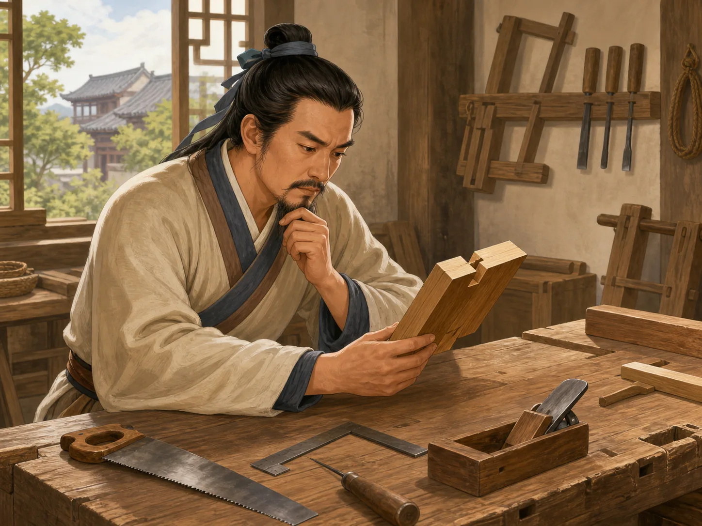
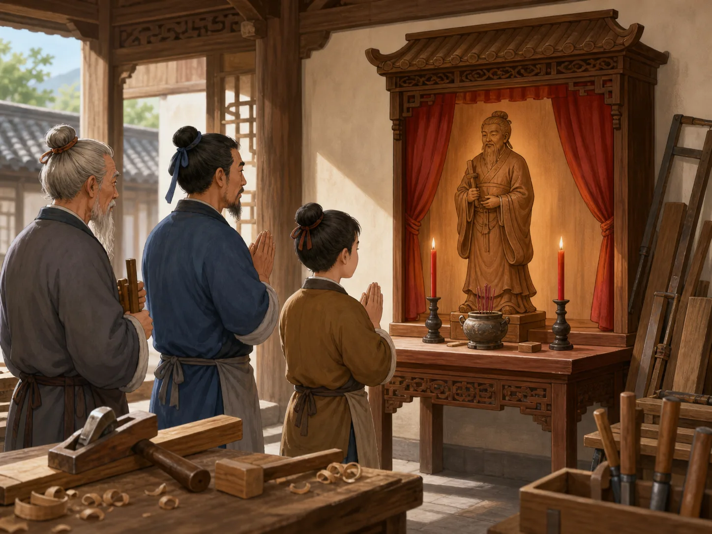

鲁班：他真的发明了所有木工工具吗？
Lu Ban: Did He Really Invent Every Carpenter's Tool?
阅读难度 · 中等Reading level · Medium
Page 1
一片草叶，真的变成了第一把锯吗？
Did One Leaf Really Become the First Saw?
Modern illustration of a legend, not a historical scene. The tale of a leaf cutting Lu Ban's hand and inspiring a saw appeared much later and does not prove how saws began.
一个人上山，手被带齿的草叶划破。他没有只喊疼，而是盯着叶边想：如果铁片也有一排尖齿，会不会更容易割开木头？于是，第一把锯诞生了。这个故事常被安在鲁班身上，听起来像一次漂亮的“发现时刻”。
问题是，早期文献没有记录这片叶子，也没有证据说明锯由鲁班一人突然发明。考古发现中，早在鲁班所处时代以前几千年，中国一些新石器时代遗址已经有带齿的石制切割工具。它们不等于后来的木工铁锯，却说明“用一排齿切割”的知识早已在发展。发明史通常不像灯泡一亮，更像许多人把一个办法反复试验、改进，再交给下一代。
A man climbs a mountain and cuts his hand on a leaf with tiny teeth. Instead of only crying out, he studies the edge and wonders, “What if a piece of iron had teeth like these? Would it cut wood more easily?” Then he invents the first saw. This story is often told about Lu Ban, and it sounds like a perfect discovery moment.
The problem is that early texts say nothing about this leaf, and no evidence shows that Lu Ban suddenly invented the saw by himself. Archaeologists have found toothed stone cutting tools at Chinese Neolithic sites thousands of years before Lu Ban's time. Those tools were not the same as a later iron carpenter's saw, but they show that people had long been developing the idea of cutting with a row of teeth. Invention usually looks less like one light switching on and more like many people testing an idea, improving it, and passing it on.
Page 2
早期书里的名字是公输般、公输盘，也叫公输子
Early Books Call Him Gongshu Ban, Gongshu Pan, or Master Gongshu
鲁班并不完全是后人凭空创造的人物。战国时期形成的《墨子》等文献写到一位以技巧出名的人，名字写作公输般、公输盘，也尊称公输子。因为古书在长期抄写中会出现通用字和不同写法，后人又把他和鲁国联系起来，“鲁班”这个名字才越来越常见。
这些早期文字让我们看到的是一位擅长器械和工程的巧匠，却没有给出完整的出生证明、学徒日记和发明清单。连他的确切生卒年和籍贯，后世说法也不完全一致。因此，我们可以说公输般是鲁班传统的早期核心，却不该把所有后来的故事倒放回他的童年，仿佛那里有一台摄像机。
Lu Ban was not simply invented out of nothing. Texts formed during the Warring States period, including the Mozi, describe a maker famous for his skill. His name appears as Gongshu Ban or Gongshu Pan, and he is also called Master Gongshu. Ancient books were copied for centuries, and related characters could be written in different ways. Later readers also connected him with the state of Lu, and the name “Lu Ban” became common.
These early writings show a clever maker of machines and large structures. They do not give us a complete birth record, an apprentice's diary, or a list of inventions. Later accounts do not even fully agree about his exact dates and birthplace. We can say that Gongshu Ban stands at the early center of the Lu Ban tradition. We cannot run every later tale backward into his childhood as if a camera had recorded it.
Page 3
一场用腰带和木片进行的攻城比赛
A Siege Contest Played with a Belt and Wooden Pieces
《墨子·公输》讲了一个紧张的故事：公输盘为楚国造攻宋用的云梯，墨子赶到楚国劝阻。他解下腰带围成一座小城，又用木片代表守城器械。公输盘九次变换攻法，墨子九次挡住；楚王最后答应不攻宋。
我们读到的是一篇战国文本精心组织的叙事，不是两人谈话的逐字录音。它告诉我们，当时的人已经把公输盘和攻城技术连在一起，也借两位技术高手的对决追问：会制造厉害机器，就等于做了正确的事吗？故事把技术和选择放在同一张桌上。一个工具怎样使用、为谁服务，也会改变人们怎样评价它。
The “Gongshu” chapter of the Mozi tells a tense story. Gongshu Pan builds cloud ladders for the state of Chu to attack the smaller state of Song. Mozi rushes to Chu to stop the war. He takes off his belt and lays it in a circle to stand for a city, then uses small wooden pieces as defenses. Gongshu Pan tries nine kinds of attack, and Mozi blocks all nine. At last, the king of Chu agrees not to attack Song.
What we have is a carefully shaped story in a Warring States text, not a word-for-word recording of the meeting. It shows that people already linked Gongshu Pan with siege technology. It also uses a contest between two technical experts to ask a larger question: Does knowing how to build a powerful machine mean it is right to build it? The story places skill and choice on the same table. How a tool is used - and whom it serves - changes how people judge it.
Page 4
锯、刨和墨斗后面，其实站着许多双手
Many Hands Stand Behind the Saw, Plane, and Ink Line

Modern composite scene, not a reconstruction of a Warring States workshop. The saw, plane, square, and joinery tools reflect woodworking traditions from different periods and cannot all be treated as Lu Ban's own tools or inventions.
后来，锯、刨、钻、曲尺、墨斗等许多工具都被说成鲁班发明。墨斗把沾墨的细线绷紧，再在木头上轻轻一弹，就能留下笔直的线；这样的工具确实显示出木匠怎样把经验变成准确的做法。可是，“后来叫鲁班尺”不能证明尺最早由鲁班制造，“木匠尊敬鲁班”也不能替代工具本身的年代证据。
工具会随着材料、任务和使用者改变。一个木匠调整锯齿，另一个改进握柄；师傅把画线的方法教给徒弟，徒弟又为新的木料修改工具。许多改进者没有把名字写进书里。把一大串发明放到鲁班一个人名下，容易记，却会把无数无名工匠从画面中擦掉。更准确的故事是：也许有杰出的个人，但一门手艺的知识通常属于长时间合作的群体。
Later generations credited Lu Ban with the saw, plane, drill, square, ink line, and many other tools. An ink line stretches an inked string tight and snaps it against wood, leaving a straight mark. It is a wonderful example of carpenters turning experience into a precise method. But calling a measuring tool a “Lu Ban ruler” in later times does not prove that he made the first one. Carpenters honoring Lu Ban is not a substitute for dating the tools themselves.
Tools change with materials, jobs, and users. One carpenter adjusts the teeth of a saw. Another improves the handle. A master teaches an apprentice how to snap a straight line, and the apprentice changes the tool for a new kind of wood. Many of these makers never put their names in a book. Giving a long list of inventions to one Lu Ban is easy to remember, but it can erase thousands of unnamed craftspeople. A more accurate story allows room for outstanding individuals while recognizing that the knowledge of a craft usually belongs to a community working across time.
Page 5
木鸟飞三天：是古代飞机，还是会飞的故事？
A Wooden Bird Flies for Three Days: Aircraft or Story?
《墨子·鲁问》还说，公输子用竹木削成一只鸟，飞了三天没有落下。墨子在故事里却不赞美它，反而说，一个小小的车轴零件能承担很重的车，更有实际用处。这里的重点不是宣布世界上第一架飞机诞生，而是讨论“巧”：只让人惊讶的东西，和真正帮助人的东西，哪一种更值得称赞？
没有留下来的实物、图纸或制造说明，我们无法知道“飞”指什么，也不能重造这只木鸟。云梯也是如此：《墨子》确实说公输盘已经为楚国造了云梯，却没有证明云梯从来没有更早形式，更不能证明后来两千年的攻城梯都照搬同一设计。古书可以证明一个故事在当时已经流传；它不一定能证明故事里的每个机械细节。
The “Questions of Lu” chapter of the Mozi also says that Master Gongshu carved a bird from bamboo and wood and made it fly for three days. Yet Mozi does not praise the bird. He says that a tiny wooden part holding a heavily loaded cart is more useful. The point is not to announce the world's first airplane. The story is asking what “skill” really means: Is a surprising object more admirable than one that helps people?
With no surviving object, plan, or building instructions, we cannot know exactly what “flew” meant or rebuild the wooden bird. The cloud ladder needs the same care. The Mozi does say that Gongshu Pan had built cloud ladders for Chu. It does not prove that no earlier form existed, or that siege ladders stayed unchanged for the next two thousand years. An old text can prove that a story was being told. It cannot always prove every mechanical detail inside the story.
Page 6
当一个巧匠变成整个行业的祖师
How One Maker Became the Ancestor of a Craft

Modern imagined scene of honoring a craft ancestor, not one documented ceremony at a known place and date. Real Lu Ban traditions varied by trade, region, and period.
唐代以后的材料已经显示工匠敬奉鲁班；到了明清时期，木匠、建筑匠和其他行业更广泛地把他当作祖师。祖师不一定是每件工具的第一位发明者。他可以是一个共同名字，让分散在不同作坊、很少被史书记录的人拥有行业记忆、规矩和自豪感。
一本著名的木工营造书叫《鲁班经》，书名很容易让人以为是鲁班亲笔写的。可是现存版本形成于明代，离战国时代已经约两千年；故宫所藏万历刻本还清楚写着明代工匠官员午荣汇编、章严同集、周言校正。书中保存了房屋、家具尺寸和工匠经验，也混合了吉凶、风水等时代观念。它是研究明代工匠世界的重要资料，却不是鲁班留下的笔记本。
Sources after the Tang dynasty show craftspeople honoring Lu Ban. By the Ming and Qing dynasties, carpenters, builders, and workers in other trades widely treated him as a craft ancestor. An ancestor of a craft does not have to be the first inventor of every tool. He can be a shared name that gives people in scattered workshops - people rarely noticed by history books - a common memory, rules, and pride.
A famous building and woodworking manual is called the Lu Ban Jing, or “Lu Ban Classic.” The title makes it sound as if Lu Ban wrote it himself. But the surviving book took shape in the Ming dynasty, about two thousand years after the Warring States period. A Ming edition in the Palace Museum even names the men who compiled, collected, and checked it. The book preserves house plans, furniture measurements, and craft knowledge, along with ideas about lucky and unlucky building. It is valuable evidence for the world of Ming craftspeople, but it is not Lu Ban's personal notebook.
那么，鲁班到底发明了什么？
So What Did Lu Ban Actually Invent?
现有证据不能给鲁班一张可靠的个人发明清单。早期文献记住了公输般的技巧、攻城器械和关于木鸟的奇谈；后来的行业传统又把更多工具、建筑和故事聚到他身上。历史人物和文化英雄，就这样一层一层合在了一起。
这不是把鲁班“变小”，而是把工匠世界看得更大。他的名字可以继续代表观察、计算和动手解决问题；同时，我们也能看见每一件成熟工具背后，那些反复试错、互相教学、没有留下姓名的手。鲁班真正代表的，也许不是“一个人发明了一切”，而是“一门手艺从来由很多人一起完成”。
The evidence cannot give Lu Ban a trustworthy personal list of inventions. Early texts remember Gongshu Ban's skill, siege machines, and the strange tale of a wooden bird. Later craft traditions gathered more tools, buildings, and stories around his name. A historical maker and a cultural hero slowly became one figure.
That does not make Lu Ban smaller. It makes the world of craft larger. His name can still stand for close observation, careful measuring, and solving problems with one's hands. At the same time, we can see the unnamed hands behind every mature tool - testing, failing, improving, and teaching. Perhaps Lu Ban's deepest meaning is not “one person invented everything,” but “a craft is always made by many people.”